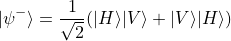
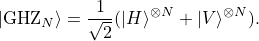
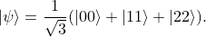

InterestsThere are two main aspects I focus on during my Ph.D. program. Multi-photon entanglement and interferenceIndistinguishable photons possess many unique properties, for example, Hong-Ou-Mandel interference. 
can be directly generated. Such polarization entangled states can be connected by PBS, obtaining GHZ state 
Moreover, by splitting the pump beam, we can get the high-dimensional spatial mode entangled state like 
By utilizing linear optical elements, e.g. wave-plate, beam splitter, together with post-selection, many quantum information processing tasks and fundamental tests of quantum mechanics can be carried out in linear optical system. High-dimensional quantum state operation based on photonsDue to the probabilistic property of SPDC process, high photon number states are difficult to generate in experiment. However, there are more than one degree of freedom for a single photon for encoding. We can utilize polarization, spatial mode (including path and orbital angular momentum) to encode 3 qubits into a single photon. The linear operations used in experiment include M-Z interferometer, phase modulator, etc. All the approaches form a toolbox towards high-dimensional Hilbert space for liear optical system. |